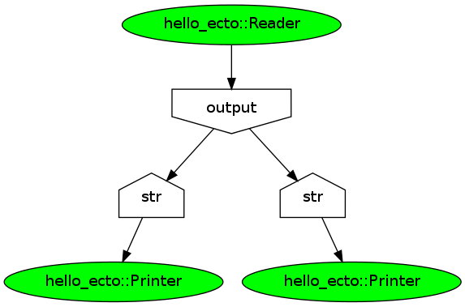

ecto is a dynamically configurable Directed Acyclic processing Graph (DAG) framework. Users may write reusable ecto::modules which become the nodes in the DAG, or ecto::plasm. Modules may be written in c++ as boost::python extensions, or in pure python, and python is used for the declaration of the ecto DAG(ecto::plasm).
- Simple processing node interface for building your own modules.
#include <ecto/ecto.hpp> using ecto::tendrils; struct MyModule { static void declare_params(tendrils& params); static void declare_io(const tendrils& params, tendrils& in, tendrils& out); void configure(tendrils& params); int process(const tendrils& in, tendrils& out); void destroy(); };
- Inputs, outputs and parameters are templated, and type erasing, giving typesafety and the ability to use your own data types..
void MyModule::declare_params(tendrils& params) { params.declare<Foo>("foo","Foo is for spam. This is a doc string", Foo(3.14)); params.declare<std::string>("str", "str is a standard string.", "default"); }
- Python is used as the plugin architecture of ecto. Exposing your modules to python is dead simple. The use of boost::python means that the python bindings for your data types are an optional powerful tool.
BOOST_PYTHON_MODULE(hello_ecto) { ecto::wrap<Printer>("Printer", "Prints a string input to standard output."); ecto::wrap<Reader>("Reader", "Reads input from standard input."); }
- ecto forces your modules to be somewhat self documenting, and allows full introspection from python and c++, including type names, docstrings and variable names.
- The plasm (DAG) executes in compiled code.
- Python is used for declaring the processing graph, or as its known to ecto, the plasm.
import ecto #ecto core library import hello_ecto #a user library, that has a few ecto modules debug = True def mygraph(): #instantiate a plasm, our DAG structure plasm = ecto.Plasm() #instantiate processing modules r = hello_ecto.Reader() #notice the keyword args, these get mapped #as parameters p1 = hello_ecto.Printer(str="default") p2 = hello_ecto.Printer(str="default") #connect outputs to inputs plasm.connect(r, "output", p1, "str") plasm.connect(r, "output", p2, "str") if debug: #render the DAG with dot print plasm.viz() ecto.view_plasm(plasm) #an execution loop print "Enter input, q to quit" while r.outputs.output != 'q': plasm.execute() #this executes the graph in compiled code. if __name__ == '__main__': mygraph()
- The ecto::plasm is easily inspected using graphviz tools.
#graphviz dot format digraph G { 0[label="hello_ecto::Reader",fillcolor=green, style="rounded,filled"]; 1[label="hello_ecto::Printer",fillcolor=green, style="rounded,filled"]; 2[label="output", shape=invhouse]; 3[label="str", shape=house]; 4[label="hello_ecto::Printer",fillcolor=green, style="rounded,filled"]; 5[label="str", shape=house]; 0->2 ; 2->3 ; 3->1 ; 2->5 ; 5->4 ; }
- Each module is self documenting by design.
Since the modules are by design self documenting, it is simple to output rst for a given set of modules.